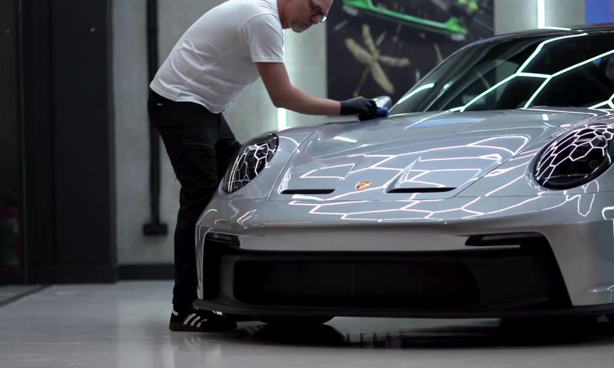
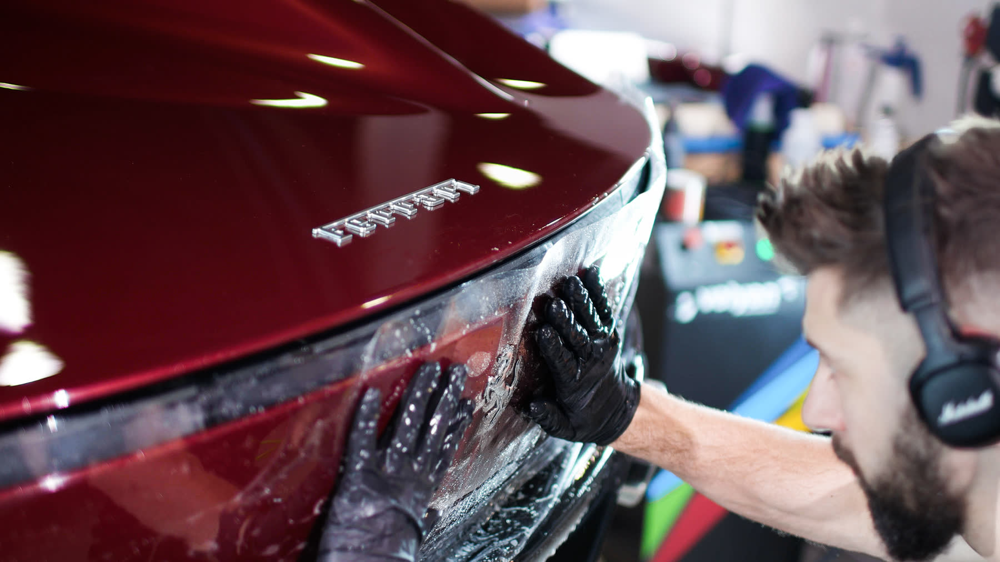
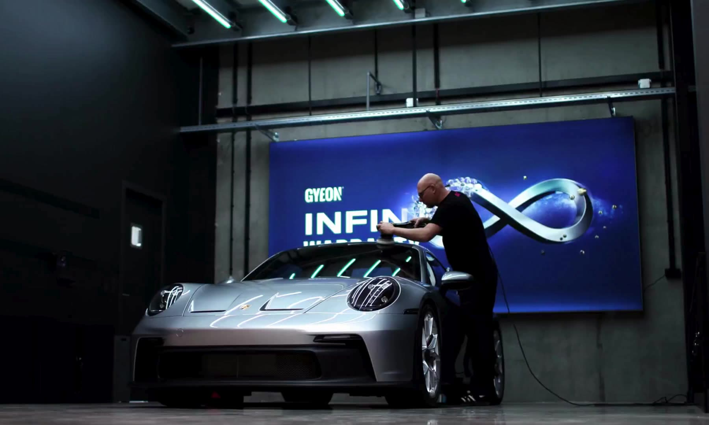

Janetzke Car DetailingOffizielles GYEON Prime Studio in Pforzheim
Perfektion,
die bleibt.
Hochwertige Keramikversiegelung und Lackschutzfolierung. Für jedes Fahrzeug aus der Region, das mehr verdient als Standard.
Termin anfragen →


Eines von wenigen.
Aus gutem Grund.
Janetzke Car Detailing ist eines von wenigen zertifizierten GYEON Prime Studios in Deutschland. Jedes Fahrzeug wird unter Studiobedingungen versiegelt, foliert und dokumentiert, nach Standards, die GYEON weltweit nur ausgewählten Betrieben verleiht.

Keramikversiegelung
Zertifizierte GYEON-Quartz-Versiegelung: jahrelanger Tiefenglanz, messbarer Schutz, dokumentierte Verarbeitung.
Mehr erfahren →
Lackschutzfolierung
Selbstheilende Schutzfolie gegen Steinschlag und Alltag. Unsichtbar verklebt, Kante für Kante.
Mehr erfahren →
Keramikpflege
Das Pflegeprogramm für versiegelte Fahrzeuge: regelmäßige Kontrolle, Aufbereitung und Auffrischung. Werterhalt im Programm, nicht als Ausnahme.
Mehr erfahren →Ein Studio.
Ein Standard.
Den Prime-Studio-Status vergibt GYEON nur an ausgewählte Detailing-Betriebe, verbunden mit Schulung, Auditierung und Garantieleistungen, die nur zertifizierte Studios anbieten dürfen.
Das Studio kennenlernen →Zufriedene Kunden.
„Mein Auto wurde hier keramikversiegelt und das Ergebnis ist absolut fantastisch. Mein Auto sieht sauberer aus denn je …“
„Gäbe es mehr Sterne, hätte ich sie angeklickt. Ich hatte meinen 5½ Jahre alten Jaguar bei Herrn Janetzke zur Keramikversiegelung …“
„Janetzke Car Detailing liefert top Arbeit, wenn’s um Keramikversiegelung und Steinschlagschutzfolie geht …“
„Sehr saubere Arbeit. Vor drei Monaten die Keramikversiegelung bekommen, und jetzt wurden die Scheiben auch behandelt …“
Echte Google-Rezensionen, vollständig nachzulesen im Google-Profil.